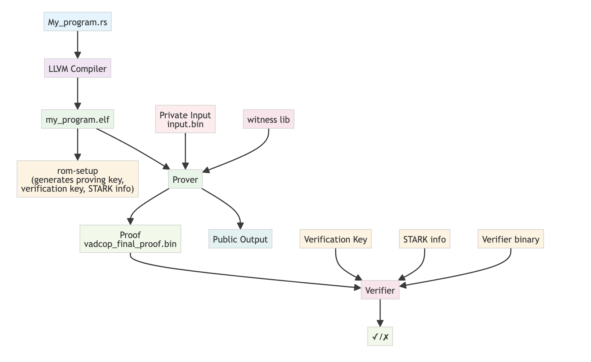

Build and Prove
This comprehensive guide covers the complete ZisK development lifecycle, from initial program compilation through proof generation and verification. You'll learn how to build Rust programs for the ZisK VM, execute them in the emulator with comprehensive testing, collect detailed performance metrics, and generate proofs using various optimization strategies.
The guide is structured to provide both practical step-by-step instructions and deep technical understanding of each phase in the ZisK development process.
Prerequisites
Before following this guide, make sure you have:
- Installation — ZisK toolchain installed
- Setup — Modified your Rust program for ZisK compatibility
- I/O Model — Understanding of how input/output works in ZisK
Table of Contents
- 1. Build Your Program
- 2. Test Your Program
- 3. Program Setup
- 4. Generate Proof
- 5. Verify Proof
- Next Steps
- Command Reference
Development Workflow
The diagram below illustrates the complete ZisK development lifecycle, from initial program creation through proof generation and verification. The workflow consists of several interconnected phases:

-
Source to Binary: Your Rust source code (
My_program.rs) is compiled using the LLVM compiler to produce a RISC-V ELF binary (my_program.elf) that can execute within the ZisK VM. -
Setup Phase: The
rom-setupprocess generates essential cryptographic parameters including the proving key, verification key, and STARK info files. These are program-specific and must be regenerated whenever your program changes. -
Proof Generation: The prover combines your compiled program, private input data (
input.bin), and the witness library to generate a cryptographic proof (vadcop_final_proof.bin) that demonstrates correct execution without revealing private information. -
Verification: The verifier uses the generated proof, public output, verification key, STARK info, and verifier binary to cryptographically validate that the program executed correctly, producing a final ✓/✗ result.
This end-to-end process ensures both the correctness of your program execution and the privacy of your input in the ZisK environment.
1. Build Your Program
Prerequisite: Make sure you have written your program and understand the I/O model before building.
Overview
The compilation process transforms your Rust source code into a RISC-V ELF binary that can execute within the ZisK VM. This cross-compilation process involves several critical steps that ensure your program is compatible with ZisK's execution environment and constraints.
Development vs Production Builds
Before compiling for ZisK, you can test your program on the native architecture using standard Rust tooling:
cargo run
This allows you to verify program logic, debug issues, and ensure correctness before the more complex ZisK compilation process.
ZisK Compilation Process
Once your program is ready to run on ZisK, compile it into an ELF file (RISC-V architecture), using the cargo-zisk CLI tool:
cargo-zisk build
This command compiles the program using the zisk target. The resulting ELF file (without extension) is generated in the ./target/riscv64ima-zisk-zkvm-elf/debug directory.
For production, compile the ELF file with the --release flag:
cargo-zisk build --release
In this case, the ELF file will be generated in the ./target/riscv64ima-zisk-zkvm-elf/release directory.
Build Artifacts
The compilation process generates several important artifacts:
- ELF Binary: The main executable file (no extension)
- Debug Symbols: For troubleshooting and performance analysis
- Metadata: ZisK-specific metadata for proof generation
2. Test Your Program
Prerequisite: You need your input data ready in
input.binformat.
Overview
Testing your compiled program using the ZisK emulator (ziskemu) is a critical step that validates program correctness before proof generation. The emulator provides a safe environment to verify execution behavior, debug issues, and collect performance metrics without the computational overhead of proof generation.
Execution Methods
You can test your compiled program using the ZisK emulator (ziskemu) before generating a proof. Use the -e (--elf) flag to specify the location of the ELF file and the -i (--inputs) flag to specify the location of the input file:
cargo-zisk build --release
ziskemu -e target/riscv64ima-zisk-zkvm-elf/release/your_program -i build/input.bin
Alternatively, you can build and execute the program in the ZisK emulator with a single command:
cargo-zisk run --release -i build/input.bin
Handling Large Programs
Complex programs may require extensive execution steps, potentially exceeding default limits. If you encounter this error:
Error during emulation: EmulationNoCompleted
Error: Error executing Run command
To resolve this, you can increase the number of execution steps using the -n (--max-steps) flag:
ziskemu -e target/riscv64ima-zisk-zkvm-elf/release/your_program -i build/input.bin -n 10000000000
When to increase step limits:
- Complex cryptographic operations
- Large data processing tasks
- Programs with extensive loops or recursion
- Memory-intensive computations
Performance Analysis
Comprehensive performance analysis is essential for optimizing ZisK programs and understanding resource requirements for proof generation.
Performance Metrics
You can get performance metrics related to the program execution in ZisK using the -m (--log-metrics) flag in the cargo-zisk run command or in ziskemu tool:
cargo-zisk run --release -i build/input.bin -m
Or
ziskemu -e target/riscv64ima-zisk-zkvm-elf/release/your_program -i build/input.bin -m
The output will include details such as execution time, throughput, and clock cycles per step:
process_rom() steps=85309 duration=0.0009 tp=89.8565 Msteps/s freq=3051.0000 33.9542 clocks/step
Execution Statistics
You can get statistics related to the program execution in ZisK using the -x (--stats) flag in the cargo-zisk run command or in ziskemu tool:
cargo-zisk run --release -i build/input.bin -x
Or
ziskemu -e target/riscv64ima-zisk-zkvm-elf/release/your_program -i build/input.bin -x
The output will include details such as cost definitions, total cost, register reads/writes, opcode statistics, etc:
Cost definitions:
AREA_PER_SEC: 1000000 steps
COST_MEMA_R1: 0.00002 sec
COST_MEMA_R2: 0.00004 sec
COST_MEMA_W1: 0.00004 sec
COST_MEMA_W2: 0.00008 sec
COST_USUAL: 0.000008 sec
COST_STEP: 0.00005 sec
Total Cost: 12.81 sec
Main Cost: 4.27 sec 85308 steps
Mem Cost: 2.22 sec 222052 steps
Mem Align: 0.05 sec 2701 steps
Opcodes: 6.24 sec 1270 steps (81182 ops)
Usual: 0.03 sec 4127 steps
Memory: 135563 a reads + 1625 na1 reads + 10 na2 reads + 84328 a writes + 524 na1 writes + 2 na2 writes = 137198 reads + 84854 writes = 222052 r/w
Opcodes:
flag: 0.00 sec (0 steps/op) (89 ops)
copyb: 0.00 sec (0 steps/op) (10568 ops)
add: 1.12 sec (77 steps/op) (14569 ops)
ltu: 0.01 sec (77 steps/op) (101 ops)
...
xor: 1.06 sec (77 steps/op) (13774 ops)
signextend_b: 0.03 sec (109 steps/op) (320 ops)
signextend_w: 0.03 sec (109 steps/op) (320 ops)
3. Program Setup
Overview
Program setup is a critical initialization step that generates the necessary parameters and constraints for proof generation. This process creates a proving key and associated metadata that are specific to your program's structure and cannot be reused across different programs.
When Setup is Required
Setup must be performed:
- First time: After building any new program ELF file
- Program changes: Whenever the program logic, dependencies, or structure changes
- Clean builds: After running
cargo-zisk clean
Generating Setup Files
Before generating a proof (or verifying the constraints), you need to generate the program setup files. This must be done the first time after building the program ELF file, or any time it changes:
cargo-zisk rom-setup -e target/riscv64ima-zisk-zkvm-elf/release/your_program -k $HOME/.zisk/provingKey
In this command:
-e(--elf) specifies the ELF file location.-k(--proving-key) specifies the directory containing the proving key. This is optional and defaults to$HOME/.zisk/provingKey.
The program setup files will be generated in the cache directory located at $HOME/.zisk.
Setup Artifacts
The setup process generates several critical files in $HOME/.zisk/cache/:
- Proving Key: Cryptographic parameters for proof generation
- Constraint Files: Zero-knowledge constraint definitions
- Metadata: Program-specific configuration and parameters
- Verification Keys: Public parameters for proof verification
Cache Management
To clean the cache directory content, use the following command:
cargo-zisk clean
When to clean cache:
- Switching between different programs
- Resolving setup-related errors
- Freeing disk space
- Starting fresh development cycle
Warning: Cleaning cache requires re-running setup before proof generation.
4. Generate Proof
Overview
Proof generation is the core process that creates a zk proof of execution demonstrating the correct execution of your program. This computationally intensive process validates that your program executed correctly without revealing the private inputs or internal computations.
Prerequisites
Before generating a proof, ensure:
- Program has been built and tested successfully
- Setup files have been generated
- Input data is prepared and validated
- Sufficient computational resources are available
Step 1: Constraint Verification
Before generating a proof (which can take some time), you can verify that all constraints are satisfied:
LIB_EXT=$([[ "$(uname)" == "Darwin" ]] && echo "dylib" || echo "so")
cargo-zisk verify-constraints -e target/riscv64ima-zisk-zkvm-elf/release/your_program -i build/input.bin -w $HOME/.zisk/bin/libzisk_witness.$LIB_EXT -k $HOME/.zisk/provingKey
In this command:
-e(--elf) specifies the ELF file location.-i(--input) specifies the input file location.-w(--witness) specifies the location of the witness library. This is optional and defaults to$HOME/.zisk/bin/libzisk_witness.$LIB_EXT.-k(--proving-key) specifies the directory containing the proving key. This is optional and defaults to$HOME/.zisk/provingKey.
Successful verification output:
[INFO ] GlCstVfy: --> Checking global constraints
[INFO ] CstrVrfy: ··· ✓ All global constraints were successfully verified
[INFO ] CstrVrfy: ··· ✓ All constraints were verified
Step 2: Proof Generation
To generate a proof, run the following command:
LIB_EXT=$([[ "$(uname)" == "Darwin" ]] && echo "dylib" || echo "so")
cargo-zisk prove -e target/riscv64ima-zisk-zkvm-elf/release/your_program -i build/input.bin -w $HOME/.zisk/bin/libzisk_witness.$LIB_EXT -k $HOME/.zisk/provingKey -o proof -a -y
In this command:
-e(--elf) specifies the ELF file location.-i(--input) specifies the input file location.-w(--witness) specifies the location of the witness library. This is optional and defaults to$HOME/.zisk/bin/libzisk_witness.$LIB_EXT.-k(--proving-key) specifies the directory containing the proving key. This is optional and defaults to$HOME/.zisk/provingKey.-o(--output) determines the output directory (in this exampleproof).-a(--aggregation) indicates that a final aggregated proof (containing all generated sub-proofs) should be produced.-y(--verify-proofs) instructs the tool to verify the proof immediately after it is generated (verification can also be performed later using thecargo-zisk verifycommand).
Successful proof generation:
[INFO ] ProofMan: ✓ Vadcop Final proof was verified
[INFO ] stop <<< GENERATING_VADCOP_PROOF 91706ms
[INFO ] ProofMan: Proofs generated successfully
Proof Generation Process
The proof generation involves several steps:
- Witness Generation: Create execution trace from program run
- Constraint Satisfaction: Verify all zero-knowledge constraints
- Polynomial Commitments: Generate cryptographic commitments
- Proof Assembly: Combine components into final proof
- Verification: Validate the generated proof
Performance Considerations
- Time: Proof generation can take minutes to hours depending on program complexity
- Memory: Requires significant RAM (typically 25GB+ per process)
- CPU: Computationally intensive, benefits from multi-core systems
- Storage: Generated proofs can be several GB in size
5. Verify Proof
Overview
Proof verification is the final step that validates the generated proof without requiring access to private inputs or the original program execution. This process ensures the proof is mathematically sound and correctly demonstrates program execution.
Verification Process
cargo-zisk verify -p ./proof/vadcop_final_proof.bin -s $HOME/.zisk/provingKey/zisk/vadcop_final/vadcop_final.starkinfo.json -e $HOME/.zisk/provingKey/zisk/vadcop_final/vadcop_final.verifier.bin -k $HOME/.zisk/provingKey/zisk/vadcop_final/vadcop_final.verkey.json
Next Steps
Performance Optimization
- Concurrent Proof Generation — Learn how to generate proofs in parallel using multiple processes
- GPU Proof Generation — Accelerate proof generation with GPU support
Additional Resources
See also: Glossary for complete command reference and technical definitions.